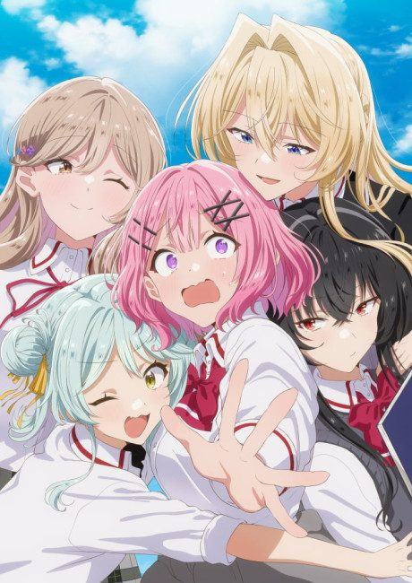

There's No Freaking Way I'll Be Your Lover! Unless…
わたしが恋人になれるわけないじゃん、ムリムリ! (※ムリじゃなかった!?)
We haven't found where the anime ends in the light novel yet.
7.6AniList score
—Animeter, no votes yet
17episodes, 2 seasons
Anime finished. Where does the story go next?
StatusUnclear
Season 1 ends at the end of light novel volume 3 (start volume 4 after it); where Next Shine ends is unknown.
13ongoing
There's No Freaking Way I'll Be Your Lover! Unless…